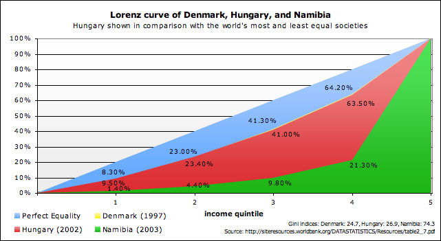
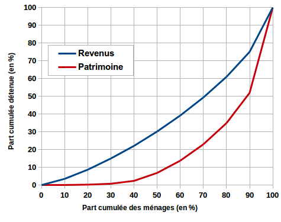
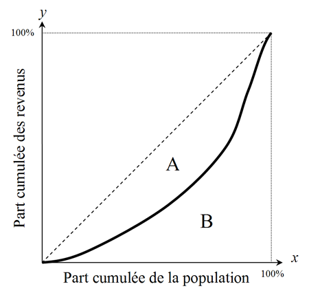

Comment les mathématiques permettent-elles de mesurer et comprendre les inégalités de richesses ?
Table of Contents
1. Introduction
1.1. Accroche
En 2024, les 1% les plus riches de la planète détenaient près de 43% des richesses mondiales (rapport Oxfam). Mais comment mesure-t-on ces inégalités, et que nous disent les mathématiques sur leurs causes et leurs conséquences ?
1.2. Problématique
Comment les outils mathématiques (statistiques, indicateurs, modèles) permettent-ils de quantifier et d’analyser les inégalités économiques ?
1.3. Annonce du plan
- Mesurer les inégalités : les indicateurs mathématiques.
- Modéliser les mécanismes : lois et théories économiques.
- Limites et enjeux : que ne peuvent pas expliquer les maths ?
2. Partie 1 : Mesurer les inégalités
2.1. Outils statistiques
Courbe de Lorenz : représentation graphique de la répartition des richesses.

Figure 1: Courbe de Lorenz pour le Danemark, la Hongrie et la Namibie

Figure 2: Courbe de Lorenz des revenus et du patrimoine en France en 2010
Indice de Gini : (0 = égalité parfaite, 1 = inégalité totale)

Figure 3: Méthode géométrique pour calculer le coefficient de Gini à partir de la courbe de Lorenz
Calcul : \[G = \dfrac{A}{A + B}\]
- Rapports interquantiles (ex : D9/D1 = rapport entre les 10% les plus riches et les 10% les plus pauvres).
3. Partie 2 : Modéliser les inégalités
3.1. Lois empiriques
Loi de Pareto (80-20) : 20% de la population possède 80% des richesses.
Formule mathématique : \[P(X > x) \simeq \left(\dfrac{x_{min}}{x}\right)^k\] où \(k\) est un paramètre d'inégalité.
- Modèle de Piketty : \(r > g\) (rendement du capital > croissance économique) amplifie les inégalités (via des équations différentielles)
3.2. Approche probabiliste
- Distributions asymétriques (loi log-normale pour les revenus, puissance pour les très hautes richesses)
4. Partie 3 : Limites et enjeux
4.1. Ce que les maths ne capturent pas
- Facteurs sociaux/historiques (colonisation, discrimination
- Biais des données (richesse offshore, travail non rémunéré)
4.2. Débats actuels
- Faut-il taxer les riches ? Simulations mathématiques de l'impact des politiques fiscales.
- Inéglaités vs croissance : courbe de Kuznets (hypothèse en U inversé)
5. Conclusion
5.1. Réponse à la problématique
Les maths fournissent des outils rigoureux pour quantifier et modéliser les inégalités, mais leur interprétation nécessite un regard pluridisciplinaire.
5.2. Ouverture
Avec l’IA et le big data, les maths pourraient-elles prédire (et réduire) les inégalités à l’avenir ?
6. Préparation pour l’oral
6.1. Exemples à citer
- Comparaison Gini France vs Afrique du Sud.
- Graphique de Lorenz pour un pays de ton choix (à dessiner au tableau).
6.2. Révisions des notions
- Calculer un Gini (aire entre courbe de Lorenz et droite d’égalité).
- Comprendre les lois puissance (Pareto).
6.3. Entraîne-toi
- Explique ces concepts à un public non-matheux (amis/famille).
6.4. Ressources utiles
- Livre Le Capital au XXIe siècle (Piketty).
- Rapports Oxfam/INSEE/Banque Mondiale.